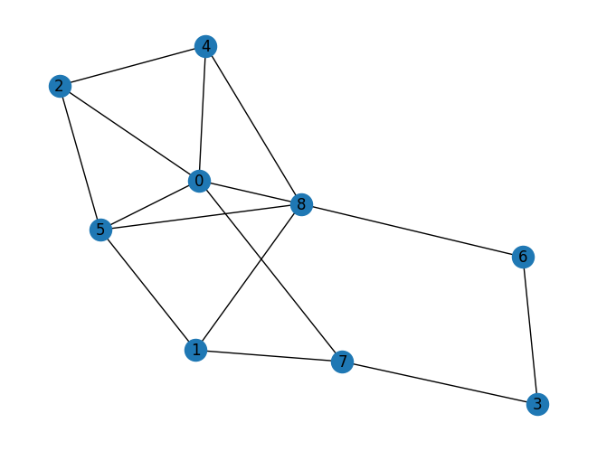

Tugas 4 Pagerank#
Buat graph berarah dengan NetworkX (minimal 9 node )
Hitung manual pagerank dari graph yang anda buat
Hitung pagerank menggunakan NetworkX
Implementasikan ulang Shakunni/Extractive-Text-Summarization
Jelaskan prosesnya
Upload di github repository webstatis masing masing
Menentukan graph dan plot#
import networkx as nx
# Create a graph
G = nx.Graph()
G.add_edges_from([(0,2),(0,4),(0,5),(1,7),(2,0),(2,4),(2,5),(3,7),(4,8),(5,1),(5,8),(6,3),(6,8),(7,0),(8,0),(8,1),(8,6)])
# draw the graph
nx.draw(G, with_labels=True)

Hitung Pagerank dengan NetworkX#
page_rank = nx.pagerank(G, alpha=0.85)
print('NetwrokX PageRank :',page_rank)
NetwrokX PageRank : {0: 0.1558998220673495, 2: 0.09777559041925096, 4: 0.09793266220277633, 5: 0.12639349288132878, 1: 0.10044924344376191, 7: 0.10540541897118083, 3: 0.07946863845888402, 8: 0.15917393983368838, 6: 0.07750119172177906}
Hitung Pagerank Manual dengan Code Python#
import numpy as np
def pagerank(M, alpha=0.85, max_iter=100, tol=1e-6):
"""
Fungsi untuk menghitung PageRank menggunakan metode iteratif dengan algoritma Power Method.
Parameter:
M (np.array): Matriks adjacency dari graf yang akan dihitung PageRank-nya.
alpha (float): Damping factor, default 0.85.
max_iter (int): Jumlah iterasi maksimum, default 100.
tol (float): Toleransi kesalahan, default 1e-6.
Return:
v (np.array): Vektor PageRank.
"""
n = M.shape[0]
v = np.ones(n) / n
M_hat = (alpha * M + (1 - alpha) / n)
for _ in range(max_iter):
v_last = v
v = M_hat @ v
if np.linalg.norm(v - v_last, 1) < tol:
break
return v
# inisialisasi matriks
n = G.number_of_nodes()
M = np.array(nx.adjacency_matrix(G).todense())
M = M / M.sum(axis=0)
# hitung pagerank
v = pagerank(M)
print('Manual PageRank :',v)
Manual PageRank : [0.15590023 0.09777579 0.09793244 0.12639312 0.10044956 0.10540472
0.07946921 0.1591743 0.07750063]
Implementasi Text Summarization in Python#
!pip install PyPDF2
Looking in indexes: https://pypi.org/simple, https://us-python.pkg.dev/colab-wheels/public/simple/
Collecting PyPDF2
Downloading pypdf2-3.0.1-py3-none-any.whl (232 kB)
?25l ━━━━━━━━━━━━━━━━━━━━━━━━━━━━━━━━━━━━━━━━ 0.0/232.6 kB ? eta -:--:--
━━━━━━━━━━━━━━━━━━━━━━━━━━━━━━━━━━━━━╸━ 225.3/232.6 kB 7.2 MB/s eta 0:00:01
━━━━━━━━━━━━━━━━━━━━━━━━━━━━━━━━━━━━━━━ 232.6/232.6 kB 5.5 MB/s eta 0:00:00
?25h
Installing collected packages: PyPDF2
Successfully installed PyPDF2-3.0.1
!pip install docx2txt
Looking in indexes: https://pypi.org/simple, https://us-python.pkg.dev/colab-wheels/public/simple/
Collecting docx2txt
Downloading docx2txt-0.8.tar.gz (2.8 kB)
Preparing metadata (setup.py) ... ?25l?25hdone
Building wheels for collected packages: docx2txt
Building wheel for docx2txt (setup.py) ... ?25l?25hdone
Created wheel for docx2txt: filename=docx2txt-0.8-py3-none-any.whl size=3957 sha256=ddf8fc9a86bd2e720f5352eb368d86b90c676f8362781cf88160a786b36d729e
Stored in directory: /root/.cache/pip/wheels/22/58/cf/093d0a6c3ecfdfc5f6ddd5524043b88e59a9a199cb02352966
Successfully built docx2txt
Installing collected packages: docx2txt
Successfully installed docx2txt-0.8
import numpy as np
import PyPDF2
import docx2txt
import sys
from nltk.tokenize.punkt import PunktSentenceTokenizer
import matplotlib.pyplot as plt
import networkx as nx
from sklearn.feature_extraction.text import TfidfTransformer, CountVectorizer
# we are going to show an example of how the method is working
# first let's take the document as an input
def readDoc(name):
# now read the type of document
if name.lower().endswith('.txt'):
choice = 1
elif name.lower().endswith('.pdf'):
choice = 2
else:
choice = 3
# print(name)
# print(choice)
# Case 1: if it is a .txt file
if choice == 1:
f = open(name, 'r', encoding="utf8")
document = f.read()
f.close()
# Case 2: if it is a .pdf file
elif choice == 2:
pdfFileObj = open(name, 'rb', encoding="utf8")
pdfReader = PyPDF2.PdfFileReader(pdfFileObj)
pageObj = pdfReader.getPage(0)
document = pageObj.extractText()
pdfFileObj.close()
# Case 3: none of the format
else:
print('Failed to load a valid file')
print('Returning an empty string')
document = ''
# print(type(document))
return document
def tokenize(document):
# We are tokenizing using the PunktSentenceTokenizer
# we call an instance of this class as sentence_tokenizer
doc_tokenizer = PunktSentenceTokenizer()
# tokenize() method: takes our document as input and returns a list of all the sentences in the document
# sentences is a list containing each sentence of the document as an element
sentences_list = doc_tokenizer.tokenize(document)
return sentences_list
!pip install sumy
Looking in indexes: https://pypi.org/simple, https://us-python.pkg.dev/colab-wheels/public/simple/
Collecting sumy
Downloading sumy-0.11.0-py2.py3-none-any.whl (97 kB)
?25l ━━━━━━━━━━━━━━━━━━━━━━━━━━━━━━━━━━━━━━━━ 0.0/97.3 kB ? eta -:--:--
━━━━━━━━━━━━━━━━━━━━━━━━━━━━━━━━━━━━━━━━ 97.3/97.3 kB 3.7 MB/s eta 0:00:00
?25hCollecting docopt<0.7,>=0.6.1 (from sumy)
Downloading docopt-0.6.2.tar.gz (25 kB)
Preparing metadata (setup.py) ... ?25l?25hdone
Collecting breadability>=0.1.20 (from sumy)
Downloading breadability-0.1.20.tar.gz (32 kB)
Preparing metadata (setup.py) ... ?25l?25hdone
Requirement already satisfied: requests>=2.7.0 in /usr/local/lib/python3.10/dist-packages (from sumy) (2.27.1)
Collecting pycountry>=18.2.23 (from sumy)
Downloading pycountry-22.3.5.tar.gz (10.1 MB)
?25l ━━━━━━━━━━━━━━━━━━━━━━━━━━━━━━━━━━━━━━━━ 0.0/10.1 MB ? eta -:--:--
━━━━╺━━━━━━━━━━━━━━━━━━━━━━━━━━━━━━━━━━━ 1.1/10.1 MB 33.0 MB/s eta 0:00:01
━━━━━━━━━━━━━━━━━━━━━━━━━╺━━━━━━━━━━━━━━ 6.4/10.1 MB 92.2 MB/s eta 0:00:01
━━━━━━━━━━━━━━━━━━━━━━━━━━━━━━━━━━━━━━╸ 10.1/10.1 MB 111.3 MB/s eta 0:00:01
━━━━━━━━━━━━━━━━━━━━━━━━━━━━━━━━━━━━━━╸ 10.1/10.1 MB 111.3 MB/s eta 0:00:01
━━━━━━━━━━━━━━━━━━━━━━━━━━━━━━━━━━━━━━━━ 10.1/10.1 MB 68.6 MB/s eta 0:00:00
?25h
Installing build dependencies ... ?25l?25hdone
Getting requirements to build wheel ... ?25l?25hdone
Preparing metadata (pyproject.toml) ... ?25l?25hdone
Requirement already satisfied: nltk>=3.0.2 in /usr/local/lib/python3.10/dist-packages (from sumy) (3.8.1)
Requirement already satisfied: chardet in /usr/local/lib/python3.10/dist-packages (from breadability>=0.1.20->sumy) (4.0.0)
Requirement already satisfied: lxml>=2.0 in /usr/local/lib/python3.10/dist-packages (from breadability>=0.1.20->sumy) (4.9.2)
Requirement already satisfied: click in /usr/local/lib/python3.10/dist-packages (from nltk>=3.0.2->sumy) (8.1.3)
Requirement already satisfied: joblib in /usr/local/lib/python3.10/dist-packages (from nltk>=3.0.2->sumy) (1.2.0)
Requirement already satisfied: regex>=2021.8.3 in /usr/local/lib/python3.10/dist-packages (from nltk>=3.0.2->sumy) (2022.10.31)
Requirement already satisfied: tqdm in /usr/local/lib/python3.10/dist-packages (from nltk>=3.0.2->sumy) (4.65.0)
Requirement already satisfied: setuptools in /usr/local/lib/python3.10/dist-packages (from pycountry>=18.2.23->sumy) (67.7.2)
Requirement already satisfied: urllib3<1.27,>=1.21.1 in /usr/local/lib/python3.10/dist-packages (from requests>=2.7.0->sumy) (1.26.15)
Requirement already satisfied: certifi>=2017.4.17 in /usr/local/lib/python3.10/dist-packages (from requests>=2.7.0->sumy) (2022.12.7)
Requirement already satisfied: charset-normalizer~=2.0.0 in /usr/local/lib/python3.10/dist-packages (from requests>=2.7.0->sumy) (2.0.12)
Requirement already satisfied: idna<4,>=2.5 in /usr/local/lib/python3.10/dist-packages (from requests>=2.7.0->sumy) (3.4)
Building wheels for collected packages: breadability, docopt, pycountry
Building wheel for breadability (setup.py) ... ?25l?25hdone
Created wheel for breadability: filename=breadability-0.1.20-py2.py3-none-any.whl size=21696 sha256=c96fcb3e65ed3385cdf888ab1e2915ae2cabe271397078e37438abd67dfeb4bb
Stored in directory: /root/.cache/pip/wheels/64/22/90/b84fcc30e16598db20a0d41340616dbf9b1e82bbcc627b0b33
Building wheel for docopt (setup.py) ... ?25l?25hdone
Created wheel for docopt: filename=docopt-0.6.2-py2.py3-none-any.whl size=13707 sha256=57dbaafaa9a0b82c4661e534a96a3de2587b1d5cddd31a2f2aa61a06f7350420
Stored in directory: /root/.cache/pip/wheels/fc/ab/d4/5da2067ac95b36618c629a5f93f809425700506f72c9732fac
Building wheel for pycountry (pyproject.toml) ... ?25l?25hdone
Created wheel for pycountry: filename=pycountry-22.3.5-py2.py3-none-any.whl size=10681832 sha256=ce87a1c49dcf740a99b880a089f9f3536068c42f9b7cecd46bf7777f7bdf95bd
Stored in directory: /root/.cache/pip/wheels/03/57/cc/290c5252ec97a6d78d36479a3c5e5ecc76318afcb241ad9dbe
Successfully built breadability docopt pycountry
Installing collected packages: docopt, pycountry, breadability, sumy
Successfully installed breadability-0.1.20 docopt-0.6.2 pycountry-22.3.5 sumy-0.11.0
import requests
from sumy.parsers.plaintext import PlaintextParser
from sumy.nlp.tokenizers import Tokenizer
from sumy.summarizers.lex_rank import LexRankSummarizer
import nltk
nltk.download('punkt')
def readDoc(url):
response = requests.get(url)
if response.status_code == 200:
return response.text
else:
return None
def summarize_document(document, num_sentences=3):
parser = PlaintextParser.from_string(document, Tokenizer("english"))
summarizer = LexRankSummarizer()
summary = summarizer(parser.document, num_sentences)
summary_text = " ".join([str(sentence) for sentence in summary])
return summary_text
url = "https://raw.githubusercontent.com/errjak/dataset/main/berita1.txt"
document = readDoc(url)
if document is not None:
summary = summarize_document(document)
print('The length of the document is:', len(document))
print('Summary:')
print(summary)
# Simpan ringkasan ke file
with open('ringkasan.txt', 'w') as file:
file.write(summary)
print('Ringkasan telah disimpan dalam file "ringkasan.txt"')
else:
print('Failed to retrieve the document.')
[nltk_data] Downloading package punkt to /root/nltk_data...
[nltk_data] Unzipping tokenizers/punkt.zip.
The length of the document is: 2169
Summary:
Kritikan itu membuat heboh karena pemilik akun itu menyebut Lampung sebagai Dajjal. Melansir detikFinance, Lampung yang kini menjadi sorotan karena jalan rusak itu ternyata hanya menganggarkan dana senilai Rp 72.445.048.520 (Rp 72,44 miliar) untuk pemeliharaan jalan. Padahal dalam Pasal 8 Pergub yang sama, dijelaskan bahwa anggaran belanja daerah tahun anggaran 2023 prov.
Ringkasan telah disimpan dalam file "ringkasan.txt"